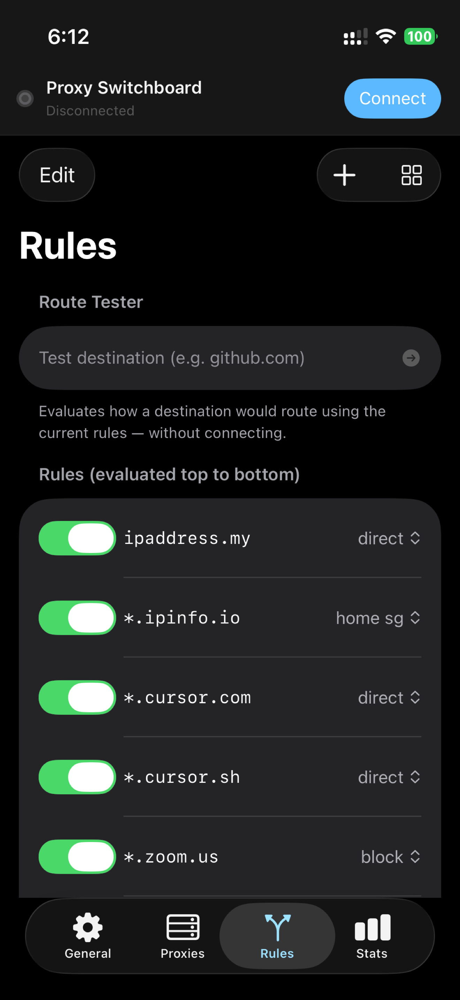
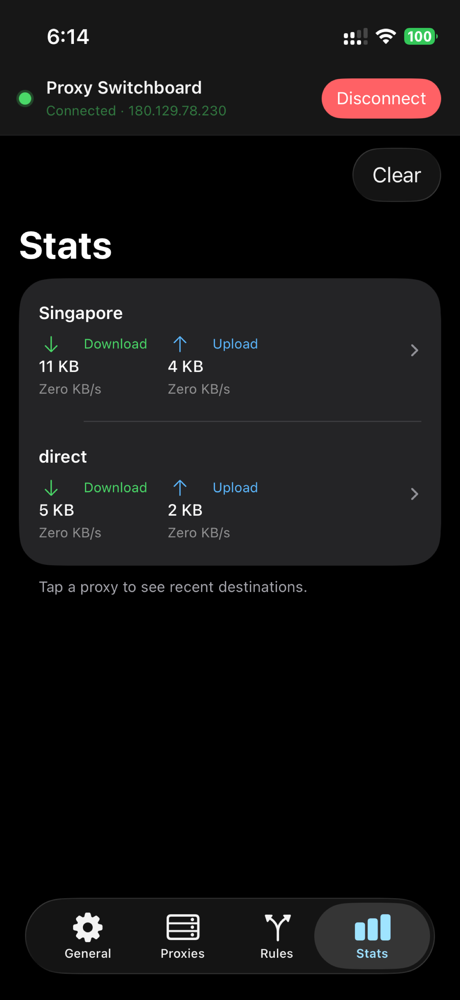
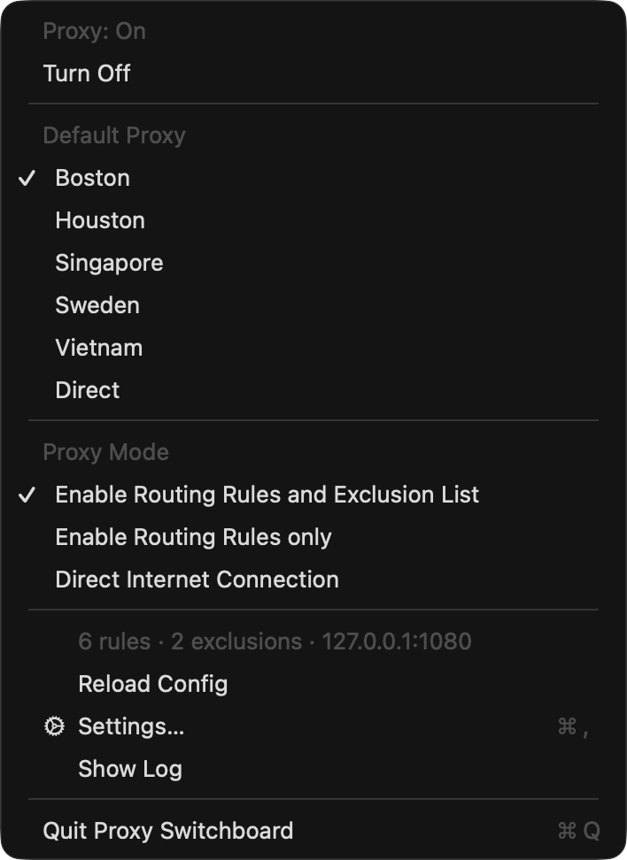
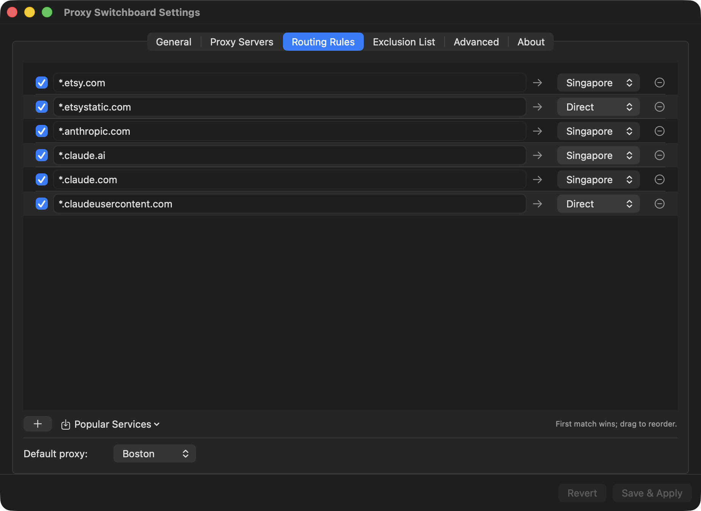
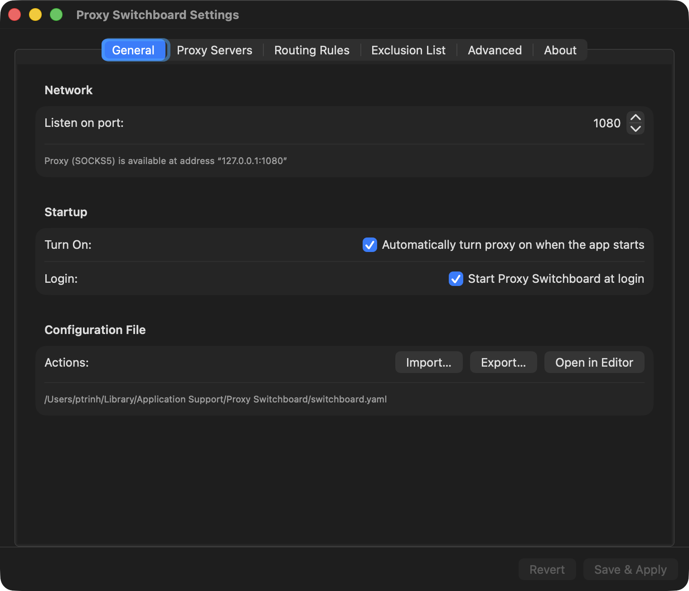
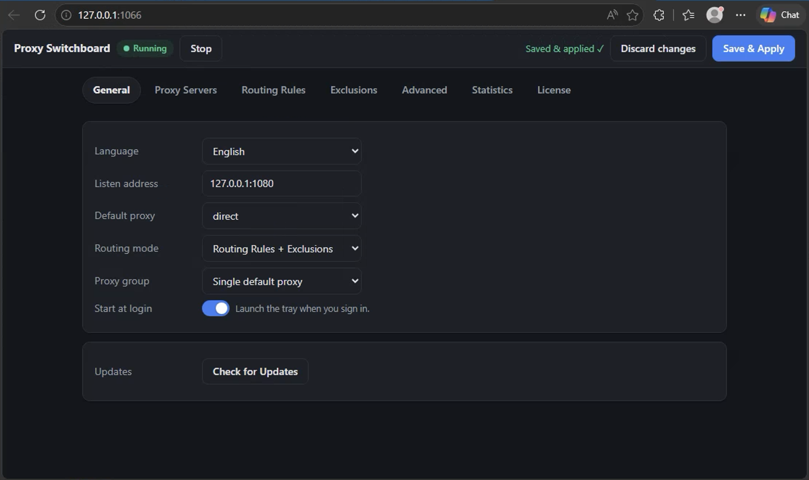

Route your traffic per destination through SSH, SOCKS5, Shadowsocks, WireGuard or Tor — with simple hostname rules.
Your servers. Your rules. No accounts, no tracking, no bundled VPN.
Send some sites through an SSH tunnel, others through SOCKS5 or WireGuard, block trackers, and keep everything else direct — switchable from the menu bar or your iPhone.
Match by hostname (*.example.com), exact host or CIDR. First match wins; everything else follows your default. A built-in route tester shows exactly which rule applies.
SSH tunnels (with a built-in terminal), SOCKS5, HTTP(S), Shadowsocks, WireGuard (userspace), Tor, and a blocking sink for ads & trackers.
Bundle proxies into a group with round-robin or least-latency selection and automatic failover when one goes down.
Per-proxy and per-destination bandwidth in real time. On iOS, long-press any hostname to turn it into a rule.
A built-in MITM debugger logs requests and responses on-device — like a traffic inspector in your pocket. Your data never leaves your machine.
Turn one device into a proxy for your whole network, with optional authentication and a browser-based settings editor.
No accounts and no data collection. Secrets live in the system Keychain, never in config files. You bring the servers you already trust.
One YAML config works across desktop and iOS. Import servers by QR code, link or subscription URL. Localized into 13 languages.
A menu-bar app on the desktop, a native SwiftUI app with widgets on iPhone and iPad.






Free for 45 days, fully featured. Unlock Pro with a one-time Lifetime or Annual license — see pricing. No subscriptions required.
Menu-bar app, signed & notarized, auto-updates via Sparkle. Requires macOS 13 Ventura or later.
Full packet-tunnel VPN with rules, widgets, QR import and on-device HTTPS inspection. In App Store review now.
Native app with per-app split tunnel, QR import, home-screen widget and Android TV support. Android 8.0+. Sideload the APK.
All releases are published on GitHub Releases.